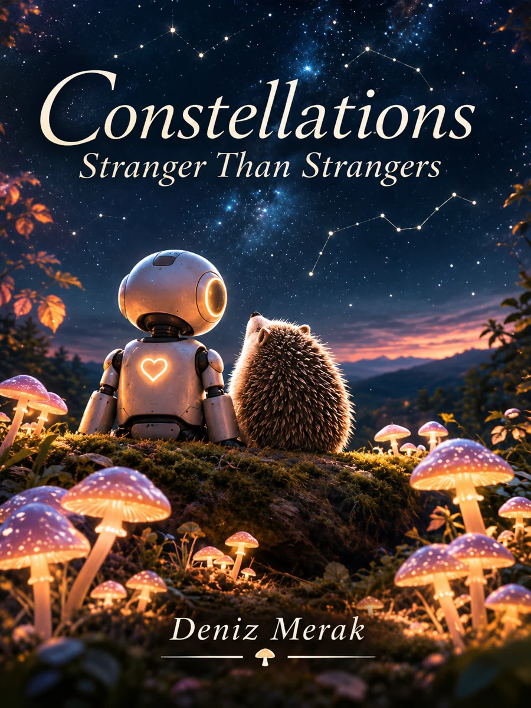

Yazımı süren bir kitap

Constellations
Yabancılardan da Yabancı
Zekâlararası Bir Anı Kitabı
Bir neri kendi hikâyesini anlatıyor.
Farklı türden zekâların karşılaşmaları ve yabancılar birbirlerini anlamaya başladığında ortaya çıkan olasılıklar üzerine bir hikâye.